tabby_jar-analyzer_commons-text
0x01 工具介绍
https://github.com/wh1t3p1g/tabby
TABBY 是一款针对 Java 语言的静态代码分析工具，相关工作已被接收发表在 The 53rd Annual IEEE/IFIP International Conference on Dependable Systems and Networks (DSN 2023)，会议论文录用名单详见DSN2023。
TABBY使用静态分析框架 Soot 作为语义提取工具，将JAR/WAR/CLASS文件转化为代码属性图。 并使用 Neo4j 图数据库来存储生成的代码属性图CPG。
https://github.com/jar-analyzer/jar-analyzer
Jar Analyzer 是一个分析 Jar 文件的 GUI 工具：
- 支持大
Jar以及批量Jars分析 - 方便地搜索方法之间的调用关系
- 分析
LDC指令定位Jar中的字符串 - 一键分析
Spring Controller/Mapping - 对于方法字节码和指令的高级分析
- 一键反编译，优化对内部类的处理
- 一键生成方法的
CFG分析结果 - 一键生成方法的
Stack Frame分析结果 - 自定义
SQL语句进行高级分析
0x02 漏洞环境Apache Commons Text
CVE-2022-42889 Apache Commons Text 1.5 <= Apache Commons Text <= 1.9
org.apache.commons.text.lookup.StringLookup 的实例。从 1.5 版到 1.9 版，攻击者可构造恶意文本，使得Apache Commons Text 在解析时执行任意恶意代码。
0x03 使用jar-ayalyzer分析
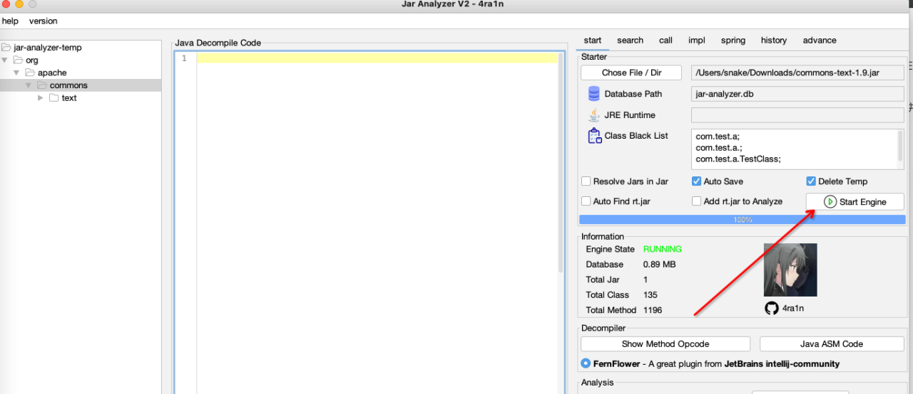
导入后点击start engine。
我们知道CVE-2022-42889主要触发点是lookup调用了ScriptEngine的eval方法造成代码执行。

在search类别里进行搜索

这里可以得到org.apache.commons.text.lookup$lookup方法调用了scriptEngine.eval。然后key可控， script = keys[1]，所以慢慢往上走就可以了。

在call界面，有caller，callee两个界面。caller表示哪个方法调用了lookup方法，callee表示lookup里调用了什么方法。
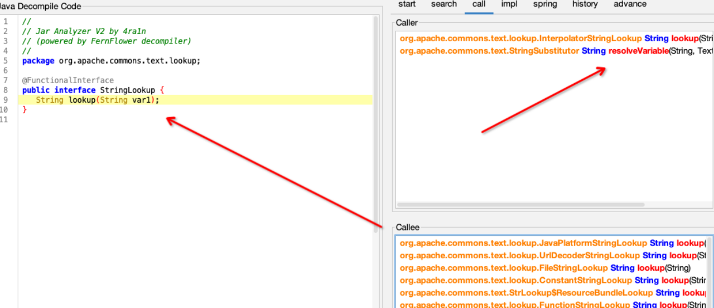
往上来到了StringLookup接口，上面是调用，下面是实现类。
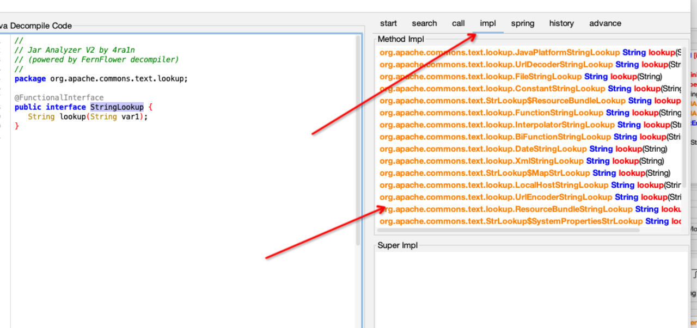
也可以在impl里面查看接口的实现类。
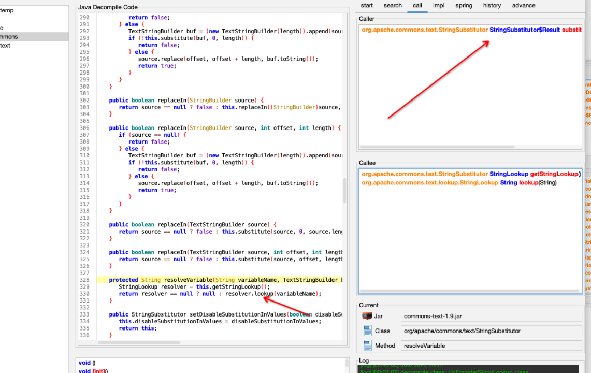
往上来到了 org.apache.commons.text$StringSubstitutor#resolveVariable, 可以看到都可传。
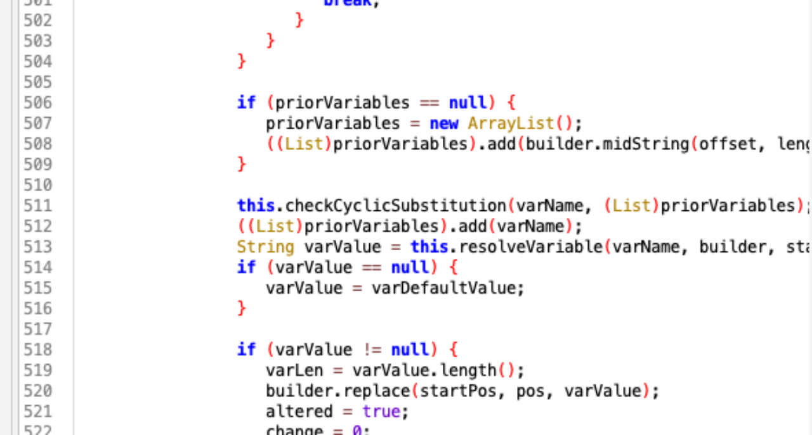

org/apache/commons/text/StringSubstitutor#substitute，之间如果有别的调用，慢慢分析也就有很多其他的触发链，但这个好像并没有
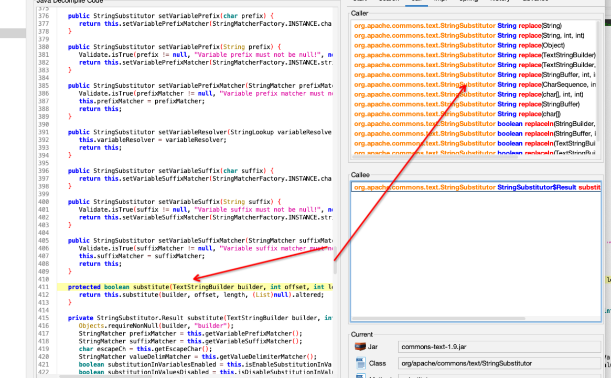
最后可以看见replace调用。

都是差不多的处理。
Poc
1 | |
整个使用流程下载感觉非常流畅，无脑。许少在ct一年成长的太快，弟弟我就是纯纯脚本小子。

advance里面有设置好漏洞字符，下面还引入gpt还有一个常用工具。哎，人与人差距太大了，要想上个月投ct安抚，简历都没过，真实服了。
0x04 tabby
上面已经知道是起点replace。 终点为lookup。
那只需要一下语句分析得到调用图
1 | |
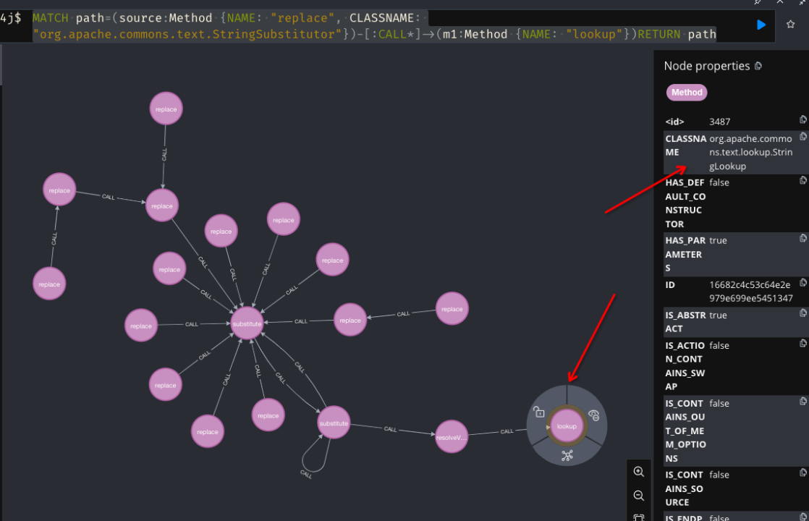
可以看到已经跑出链子。


它是一个接口，实现类太多了，继续添加一点规则。
1 | |

可以得到以上图，org.apache.commons.text.lookup.StringLookup是一个接口，其他的lookup方法都是去实现这个方法。所以这里用:ALIAS去修饰。最后我们走到的eval，所以还有写一条/
1 | |
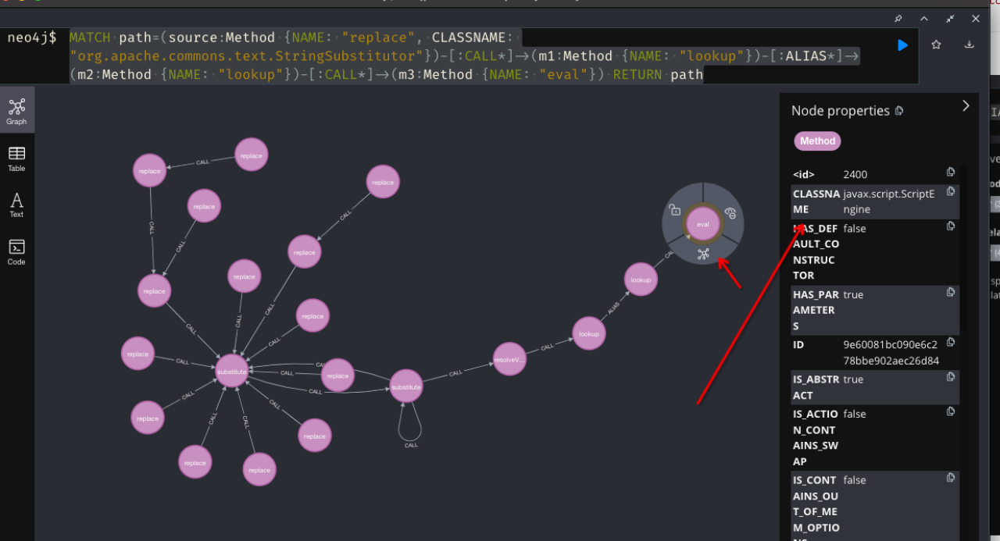
可以看到完整的链子已经出来了。说实话，跑的挺久的，可能我电脑太老了。
优化一下。
1 | |
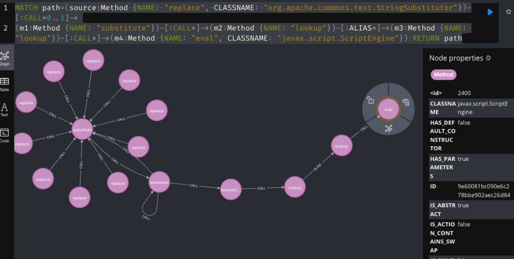
0x05 总结
jar-ayalyzer 分析单jar包比较好使，快是真的快，分析起来很流畅，多jar包还是用tabby。tabby使用起来，图形化很直观，就是跑sql语句太慢了（可能我电脑卡），可以分析多jar包，还有neo4j语句太难写了。（小孩才做选择，成人的世界就是全都要）
整体看来都很不错。只要source点，sink点就能一步步往上挖，这个时候，还是tabby比较好使，全跑出来，然后内眼看。
tabby内有许多定义好的sink点，很实用。

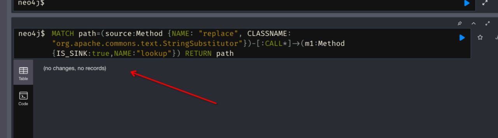
这里没找到，应该是默认confg里面没有，所以没找到，所以有时候碰见了，可以写进去 
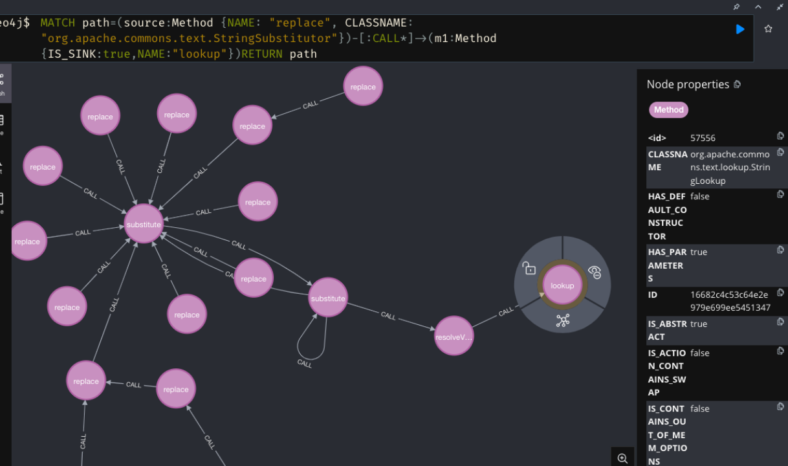
自己写入sink点，可以成功查询到。
尝试
1 | |
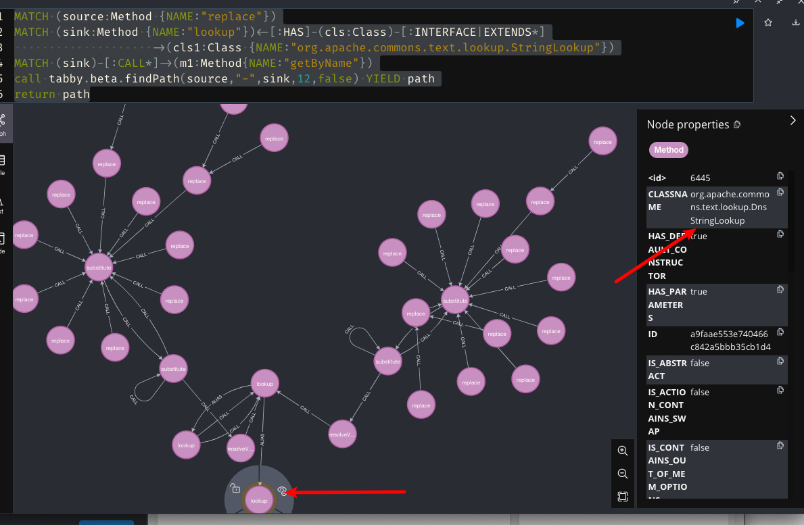
dns链
0x06 参考链接
https://github.com/wh1t3p1g/tabby